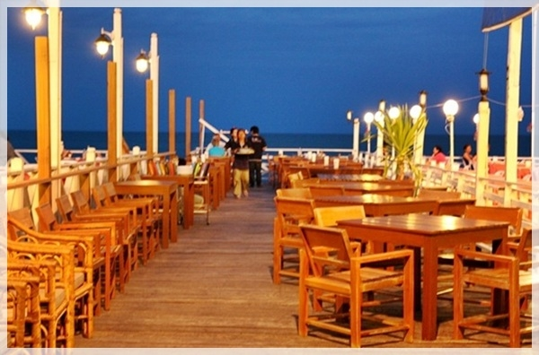

ปลาทูเรสเตอรองท์
ข้อมูล : ร้านอาหารซีฟู้ดที่เลื่องชื่อที่สุดในชะอำ ทั้งอาหารทะเลสดๆ อาหารไทยพื้นบ้าน อาหารยุโรป อาหารค็อกเทล ร้านตกแต่งเรียบง่ายบรรยากาศน่านั่ง ราคาไม่แพง จำหน่ายทั้งอาหารทะเลสดๆ อาหารไทยพื้นบ้าน อาหารยุโรป อาหารค็อกเทล
ที่ตั้ง : 869 อาคาร ข้างโรงแรมโกลด์เด้นท์แซนด์ ถนนบุรีรมย์ ตำบลชะอำ อำเภอชะอำ จังหวัดเพชรบุรี 76120
โทรศัพท์ : 032-508-175
เวลาเปิด-ปิด : เวลา 10.00 - 22.00 น.
การเดินทาง : ใช้ถนนถนนบุรีรมย์
แนะนำ : ปลาทูฉู่ฉี่, อาหารซีฟู้ด, แกงป่าปลาเห็ดโคน, แกงส้มไข่ปลาริวกิวกับหน่อไม้ดอง, ปลาหมึกนึ่งมะนาว, ปูผัดผงกะหรี่, กุ้งเผาเกลือ, ปลาหมึกแดดเดียว
ชมวิวซีฟู้ด
ข้อมูล : ร้านอาหารทะเล ที่เน้นความสดใหม่ เพราะร้านติดอยู่ชายทะเลใกล้กับสะพาน สัมผัสบรรยากาศวิวชายทะเลได้อย่างใกล้ชิด ร้านตกแต่งเรียบง่าย น่านั่ง ราคาไม่แพง
ที่ตั้ง : 246 อาคาร ติดกับบ้านพักชมวิวบังกะโล ถนนร่วมจิต ตำบลชะอำ อำเภอชะอำ จังหวัดเพชรบุรี 76120
โทรศัพท์ : 032-430-350 , 081-757-9704
เวลาเปิด-ปิด : 10.00 - 22.00 น.
การเดินทาง : ใช้ถนนร่วมจิตตรงไปบริเวณสะพานปลาชะอำ เลี้ยวเข้าข้าง รพ.ชะอำหรือซอยทางเข้าวัดเนรัญชราราม จะเห็นร้านอาหารชมวิวซีฟู้ด ตั้งอยู่ติดกับสะพานปลาชะอำ
แนะนำ : ปลาเก๋าคั่วพริกไทยดำ, แกงส้มชะอมกุ้ง, กุ้งผัดชมวิว, หอยแมลงภู่อบหม้อดิน,
ครัวเม็ดทราย
ข้อมูล : ร้านอาหารทะเลริมหาด บรรยากาศดี อาหารอร่อย ราคาไม่แพง การตกแต่งเรียบง่าย เน้นการบริการแบบเป็นกันเอง
ที่ตั้ง : 27/14 ถนนคลองเทียน ตำบลชะอำ อำเภอชะอำ จังหวัดเพชรบุรี 76120
โทรศัพท์ : 032-430-196 , 086-640-8888 , 081-763-6070
เวลาเปิด-ปิด : 10.00 - 22.00 น.
การเดินทาง : จากตัวเมืองเพชรบุรี ให้ตรงมาทางสี่แยกชะอำ แล้วเลี้ยวซ้ายมาจนถึงหาดชะอำ มาถึงจุดชมวิวแล้วเลี้ยวซ้าย ให้สังเกตวัดเนรัญชราราม
แนะนำ : ปลาหมึกผัดกระเทียม, กั้งทอดกระเทียม, ปลาหมึกไข่นึ่งมะนาว
ระเบียงจันทร์

ข้อมูล : ร้านอาหารทะเล ที่เน้นความสดใหม่ เพราะร้านอยู่ติดชายทะเลใกล้กับสะพาน สัมผัสบรรยากาศวิวชายทะเลได้อย่างใกล้ชิด ร้านตกแต่งเรียบง่าย น่านั่ง ราคาไม่แพง
ที่ตั้ง : 17 ถนนนเรศดำริห์ ตำบลหัวหิน อำเภอหัวหิน จังหวัดประจวบคีรีขันธ์ 77110
โทรศัพท์ : 032-511-734
เวลาเปิด-ปิด : 11.00 - 23.00 น.
การเดินทาง : จากตัวเมืองประจวบคีรีขันธ์ มุ่งหน้ามาตามถนนนเรศดำริห์ ตรงมาจะเห็นร้านระเบียงจันทร์ ตั้งอยู่ติดทะเล บริเวณสะพานปลาใกล้กับร้านชาวเล
แนะนำ : ปูทะเลผัดพริกไทยดำ, ยำผักบุ้งกุ้งสด, ต้มยำทะเล,ปลากะพงขาวยำตะไคร้